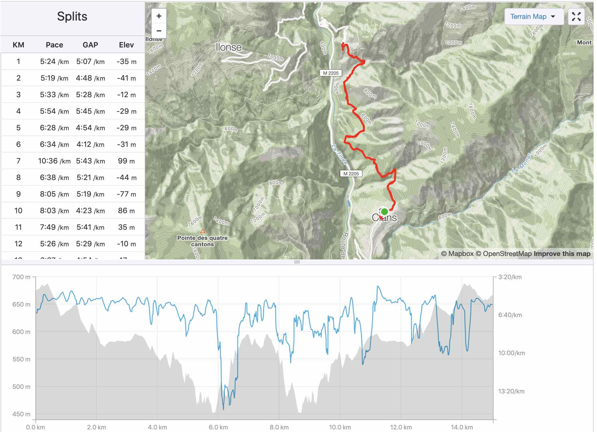
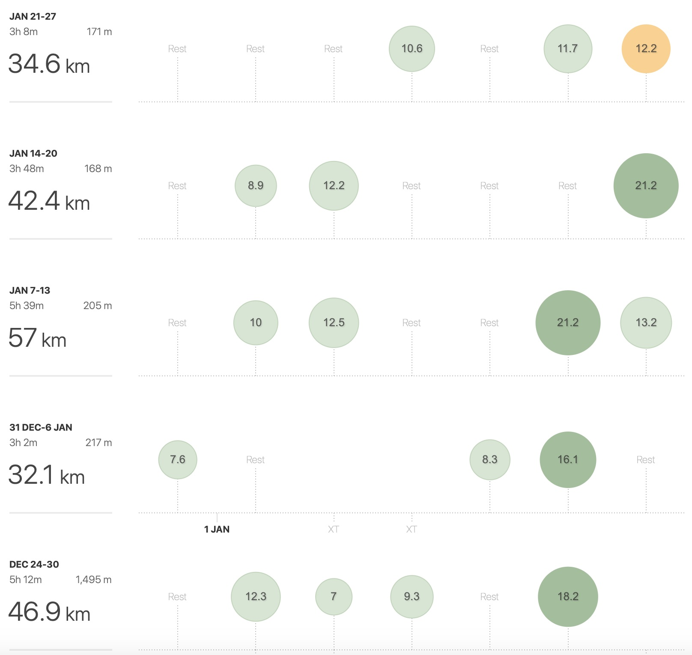
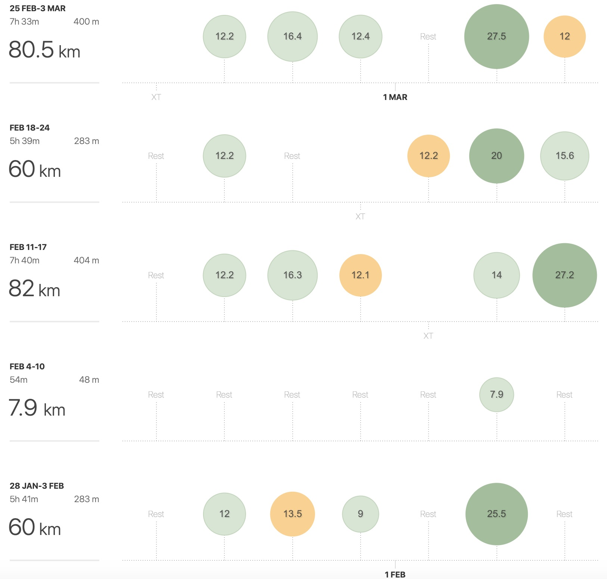

Increasing Weekly Millage a.k.a. Run Boy Run
It was definitely now time to train a little bit more consistently. But, before that, the dream decided to meet, party, and run a little 15km in the mountain, to have a little taste of what the UTMC half-marathon will reserve us.
A little run in the mountain
The plan was as follows: first we go to Clans in the afternoon, then we have a raclette and a few glasses of red wine, a good night of rest, a good coffee, and finally, a teeny-tiny run in the mountain as a little clean-up.
And everything went according to plan, up until after dinner, when Barbie Girl came-up with an improbable alcoholic drink…
Une petite Suze?
And there is no more improbable drink than the Suze. As you can guess from the size of its Wikepedia page… The good part of the Suze, is that it can be used in quite different contexts, such as to defrost, to clean the oven, to unblock the sink, and, well, to drink. But, Barbie Girl managed, somehow, to convince Bergamot that it was drinkable. To be honest, I preferred to join Chamomile and just have some tea. Yeah, it was that bad…
Une petit trail?
Petit… not quite, 15km and 600m of ascent…

This actually helped us to realize that we will suffer at the UTMC…
Un petit peu de millage?
After a month to recover from that petit trail, I was finally able to accumulate some millage. I started to watch a few YouTube channels dedicated to running, and I started to follow a simple advise: to improve, you have to run more.

I was now able to have a long run almost every week (I qualify a long run as a run of 16km or more), and a weekly millage of a little bit more that 30km/week. I then decided to increase a little bit more the weekly millage…
Un petit peu plus de millage?

And this is exactly what I did. With a weekly millage of around 60km/week. I was not focusing on the speed, but I still managed to gain a bit of speed and to increase my long run up to 27km. In other words, I was staring to be ready for the Nice half-marathon!